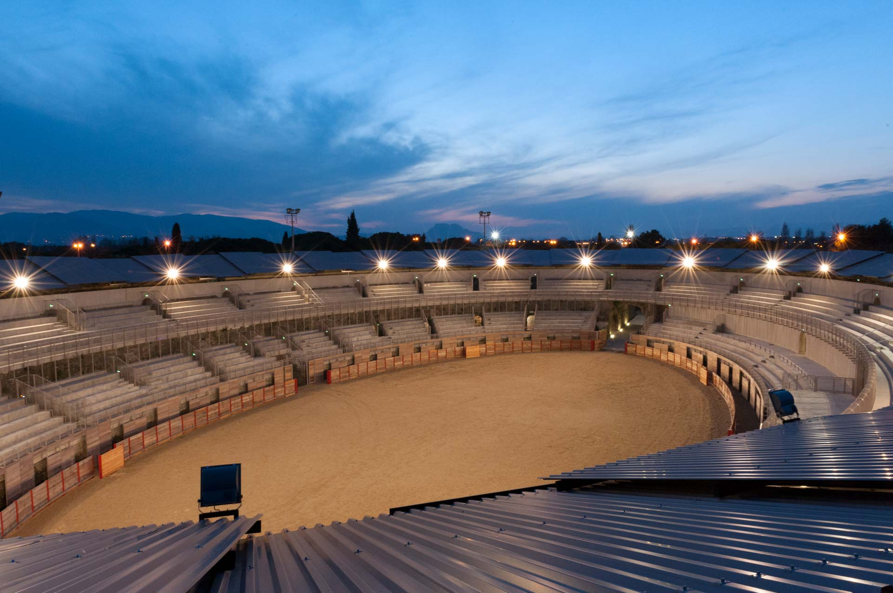

Activités extérieures
Port de Fréjus
Le port de plaisance de Port-Fréjus est situé dans le Var. Il dispose d'une capacité d'accueil de 749 bateaux sur pontons. Le port de Port-Fréjus dispose d'un espace visiteurs pour vos escales avec 40 places disponibles. Le port est réservé aux bateaux de moins de 40 m.

Arène de Fréjus
Les Arènes de Fréjus, amphithéâtre romain d'une capacité de 5 000 places situé à Fréjus. La structure a été construite au 1er siècle. Ces derniers temps, l'arène a été utilisée pour de grands concerts de rock, accueillant des artistes tels que David Bowie, Queen, Iron Maiden, Rod Stewart et Tina Turner. Les touristes peuvent admirer les murs, le premier et le deuxième étage étant accessibles par un escalier. Vous pouvez voyager à travers l'histoire en visitant une ancienne galerie au rez-de-chaussée, ou faire une pause au cavea, une place publique spécialement conçue où vous pourrez assister aux événements d'aujourd'hui. L'élément le plus particulier est la tribune située au cœur de l'Amphithéâtre, autrefois réservée aux grandes personnalités de l'époque et aux personnalités de haut rang.
Baptême de plongée
Le CIP Fréjus existe depuis 1988. Le centre est situé au port de Fréjus, entre Saint Tropez et Cannes, au plein milieu de la Côte d'Azur. Valérie, Éric et toute l’équipe du CIP vous accueillent tous les jours durant toute l’année. Initiation à la plongée sous-marine, découverte de la faune et de la flore et prise en main du matériel de plongée sur un site inaccessible à pied tel que le lion de mer ou l’île d’or.